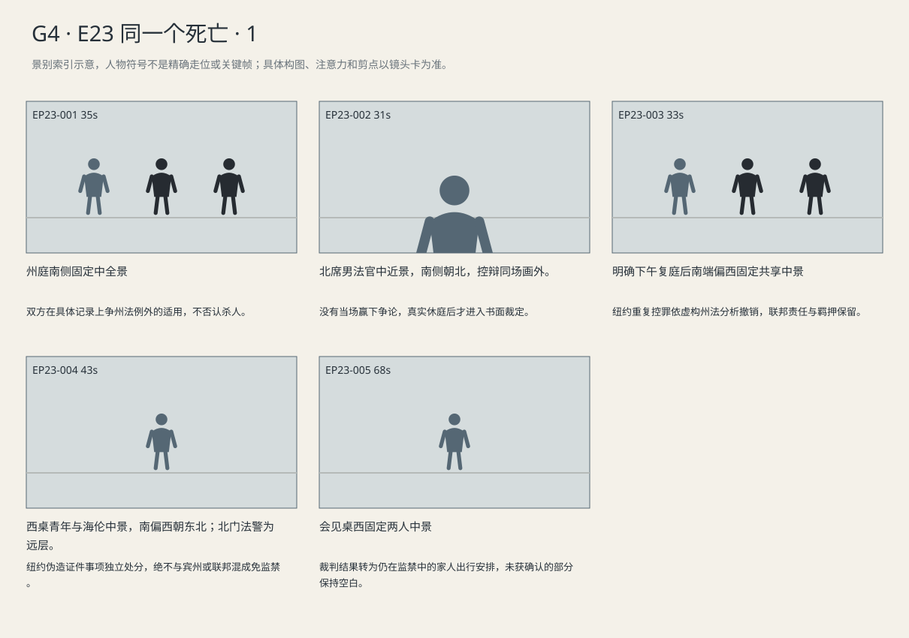

纽约重复控罪撤销、纽约假证另行认罪、宾州独立命令分别说明；庭外回家口号与本人收到的三份文件不相符。
剧本Markdown · 全部独立复制稿 · 英语字幕 · 中文字幕
详细剧本
E23-SC01 · 日·认罪后数周·州申请听证 · COURT-STATE
州法庭北窗的光落在木质席沿。北侧男法官翻到例外条文，西桌海伦与深蓝西装的路易吉并坐，东桌州检察官起身。海伦的蓝夹左边是已接受的联邦认罪记录，右边是州起诉书。瑞秋仍在东南旁听，棕文件袋合着。检察官把自己的两张对照页分开放在东桌，指给北席看。
州检察官（使用英语，把两页分开摆）：The federal counts punish interstate and online stalking. New York's murder charge punishes an intentional killing here. Our law allows an exception for different harms.
中文对照：联邦两项惩处跨州和网络跟踪，纽约谋杀罪惩处在这里故意杀人。本州法律对不同危害设有例外。
海伦等他说完才站起，将联邦记录翻到青年承认死亡与意图的段落，放到州指控同一姓名旁边。
海伦（使用英语，把两页对应到具体行为，听法官是否追问）：His federal plea covers Brian Ward's intentional killing too. The stalking led to the shooting. It's one course of conduct.
中文对照：他的联邦认罪也包括故意杀害布莱恩·沃德。跟踪之后就是这次枪击，是同一组连续行为。
法官没有立即写结论，先抬手让她停在这里。
州法官（使用英语，限定本案适用范围）：You're relying on New York's protection for the same criminal transaction, not a blanket federal ban?
中文对照：你依据的是纽约对同一犯罪交易的保护，不是一条一概禁止州起诉的联邦规则？
海伦（使用英语，不多补一句）：Correct.
中文对照：对。
检察官从自己的纸页里抽出例外条文，却没有移开被害人姓名的那页。
州检察官（使用英语，坚持例外而非否认纸上内容）：The same death appears in both. That doesn't make the harms identical.
中文对照：两案都有同一死亡，不代表危害就相同。
海伦的手指留在两份记录相应的位置，没有把它说成只要死者相同就当然禁止。
海伦（使用英语，手停在对应段落）：The exception still has to fit this conduct.
中文对照：例外仍须适用于这些具体行为。
法官看完两处后合上夹子，举手示意暂休，起身离席。检察官把例外页夹回，海伦收住笔，路易吉没有向旁听席回头。
E23-SC02 · 下午·同日休庭后 · COURT-STATE
下午复庭，北席放着书面裁定。海伦将两份对照记录重新摆平，路易吉仍在西侧；瑞秋在东南坐好，拇指抵着棕袋扣。法官等后门合上才开口。
州法官（使用英语，宣读书面裁定）：On this record, the federal convictions addressed the same death in the same criminal transaction. Under our state law, the claimed exception does not apply.
中文对照：依据本案记录，联邦定罪已处理同一犯罪交易中的同一死亡。依本州法律，所主张的例外不适用。
海伦翻到收到的副本，在裁定结论旁留下一道短线，没有移开下一页联邦量刑材料。
州法官（使用英语，把范围说完）：The listed murder and duplicative firearm counts are dismissed. The federal convictions remain. The defendant is not being released.
中文对照：列明的谋杀和重复枪械指控撤销。联邦定罪仍然有效，被告不会因此获释。
路易吉听完“不会获释”，双手仍在桌沿。瑞秋抬眼看向北席，没有向西桌点头。法官将裁定收到左边，拿起单独标注纽约持有事项的协议。路易吉起身，海伦坐着等待。
州法官（使用英语，转入独立事项）：For knowingly possessing a forged identification document in New York, how do you plead?
中文对照：对于明知是虚假身份证明文件仍在纽约持有这一项，你如何答辩？
青年听清地域和行为，自己回答。
路易吉（使用英语，按问题逐项回答，不急着坐下）：Guilty. I had the ID in New York. I knew it was forged. I understand the rights I'm giving up. No one's forced me.
中文对照：认罪。我在纽约持有那张证件，也知道它是假的。我明白自己放弃哪些权利，没有人强迫我。
法官核对这一项自愿认罪的记录，再在协议上签认。
州法官（使用英语，仅对纽约该项裁判）：The plea is accepted. The agreed sentence on this count is time served. It adds no custody.
中文对照：法院接受认罪。此项协定刑罚为已羁押时间，不追加监禁。
路易吉（使用英语，坐下前答）：I understand.
中文对照：我明白。
路易吉坐回原位。海伦把已签的纽约协议与撤销裁定分别收好。北门侧法警一直等在原处，直到法官示意本庭程序结束才握住门把，准备押返。
E23-SC03 · 傍晚·同日押返后 · VISIT
傍晚，押返后的会见室里，东窄窗下的桌沿已经暗了。路易吉换回浅灰囚服，双腕自由，坐北侧。海伦坐南侧，已从蓝夹取出三份文件：纽约裁定放西，宾州法院自己的书面命令放中，联邦量刑通知放东。青年手里只有一支笔和一张自留纸。
路易吉（使用英语，回想刚听见的话，没跟着高兴）：On the way back, someone yelled I was going home. They really think I'm getting out.
中文对照：回来的路上，有人喊我能回家了。他们真以为我要出去了。
海伦先将宾州命令转正，让他看清是另一法院，再把东边的量刑通知推向北侧。
海伦（使用英语，三份纸分别指清，不把它们叠成一件事）：No. We're done in New York. Pennsylvania's own order says time served. No more custody there. This one's your federal sentencing notice.
中文对照：没有。纽约这边结了。宾州自己的命令写的是已羁押时间，不再追加。剩下这张，是联邦量刑通知。
青年翻到通知上的日期。海伦松手，让那张纸停在他面前。
海伦（使用英语，让他先记日期，不领胜诉的功劳）：That's your sentencing date. We haven't agreed on a sentence.
中文对照：这是量刑日期。判多久，还没谈定。
他把日期抄到自留纸上，在下方另起一行准备写会见安排。
路易吉（使用英语，压住空的会见栏，问能不能安排）：My sister's taken two days off. Can you confirm a visit before she pays for the tickets?
中文对照：我姐已经请了两天假。她买票之前，能先确认让不让她来探视吗？
海伦翻开日历，没有给那一行补上数字。
海伦（使用英语，翻日历但不报没确认的日子）：I'll check tomorrow. Don't fill that in yet.
中文对照：我明天问。那一栏先别填。
青年笔尖已经落到空行起端，又抬了起来。
路易吉（使用英语，把家人的安排说实，笔离开空行）：Tell her to wait on the tickets. And make sure she knows it's a visit. I'm not getting out.
中文对照：让她先别买票。也跟她说清楚，是来探视，我还出不去。
海伦（使用英语，明确承接家属安排）：I'll tell her.
中文对照：我会告诉她。
他在未确认的一行旁只画一个空方框，把笔放下。海伦将三地文件分别收回夹内，青年留下自留纸；那一行没有被填成归家日期。
景别索引板
简化人物符号仅用于检索景别。完整镜头卡、信息变化及相邻剪点另页阅读。

逐镜复制稿
EP23-001 · 制作号E23-SH001 · 35s · 州庭南侧固定中全景
双方在具体记录上争州法例外的适用，不否认杀人。
成片采用 [0,35) 秒；2个生成候选，技术边界不是剪点。候选未生成。
成片镜 E23-SH001 共35秒；下面2个独立生成候选共同服务本镜。技术接续不等于成片剪点，不能将本文件整段提交为一次任务。先制作并核验连续表演、机位和声线，再决定延长或覆盖方案；当前无实际媒体。
【E23-SH001-G01 · 本镜采用 0—18 秒】
16:9横屏，当代美国真人现实悬疑。环境低至中等饱和，人物肤色保持真实差异与自然纹理；深黑保留衣料和道具分离，白纸与白领高光柔和有层次。冷暖来自本镜已有物理光源，不统一青橙、不磨皮、不以整体欠曝制造悬疑。遵循本镜机位、表演与焦点，不擅自追加缓推、急变焦或摇晃。
场次风格：本场时段：日·认罪后数周·州申请听证。本场光源启用及强度以明确时段和正文为准，同场反打继承光源方向；不因景别变化任意换色温。 本地光色与材质：北高窗与中性顶灯维持旧木、纸白和深灰的层次；法官、辩方与旁听者用同一写实肤色规则。既定遮挡不盖住已交代的递页、手腕或签名动作。
总生成长度20秒，为中间18秒采用区间保留开头和结尾各1秒自然余量，不增添剧情。
人物：
以下为连续镜的身份库；人物是否已入画、离场及持物只依本段起态与动作，不能把整镜所有角色同时塞入本段。
州检察官，45岁黑人男性，深蓝西装、灰领带。
州法官，60岁白人男性，短银发、黑法袍.
海伦，55岁白人女性，短灰金发、窄长脸、深灰西装、灰蓝衬衫、银色腕表，蓝色案卷夹。低中音、短句准确，保留等对方回答的停顿。
路易吉，26岁意裔男性，深棕短卷发、浓眉、棕眼、较长椭圆脸、清楚下颌、精瘦体态；深蓝西装、白衬衫、无领带，面容略显疲惫但年龄外观不突变。声音中低、清楚克制。
环境与光源：法官席北，辩方西、控方东、旁听席南，中轴隔栏；从南或西南拍，瑞秋旁听东南、其他支持者西南。北侧高窗冷光、顶灯中性，深红毛衣保留细微织纹。
景别/机位：州庭南侧固定中全景
构图：沿用该成片镜既定机位和场景方向；当前站位、朝向与持物：州检察官站东桌，将两张对照页分开。
起始画面：州检察官站东桌，将两张对照页分开。
事件与表演：东检方起身把两页分开放，说明不同危害，北席听完不判。 同一成片镜、同一相机路径与速度；接续上一段已发生动作，不重做开头。
注意力变化：州检察官站东桌，将两张对照页分开。 → 东检方起身把两页分开放，说明不同危害，北席听完不判。 角色与物件停留在这一步的连续状态，机位及照明不重置。
摄影机：州庭南侧固定中全景，东检方与西辩方各自材料仍在各自桌；北男法官可见，不做文件来回跳转动画。
焦点：仅响应本段当前动作与受话关系；不预先转向尚未发生的后段事件。
结束状态：东检方起身把两页分开放，说明不同危害，北席听完不判。 角色与物件停留在这一步的连续状态，机位及照明不重置。
声音：<法院通风和安静大厅底声；当前空间连续环境底声；拟音只随本段真实动作与物件接触发生，已完成事件不重演；可辨英语仅为下列本段对白。>
(无背景音乐；先以表演、对白、真实环境声成立，禁止在技术段接缝加音乐遮掩。)
准确对白按顺序：
州检察官向州法官，把两页分开摆，只使用英语说一次：{The federal counts punish interstate and online stalking. New York's murder charge punishes an intentional killing here. Our law allows an exception for different harms.}
只说列出的英语原句；导演说明不发声，不说中文译文，不额外加旁白或对白。手机/公文/字幕均由后期叠加，生成画面不排字。单镜连续，不加入内部切镜；前后保持身份、服装、门窗、物件与接触状态一致。
【E23-SH001-G02 · 本镜采用 18—35 秒】
16:9横屏，当代美国真人现实悬疑。环境低至中等饱和，人物肤色保持真实差异与自然纹理；深黑保留衣料和道具分离，白纸与白领高光柔和有层次。冷暖来自本镜已有物理光源，不统一青橙、不磨皮、不以整体欠曝制造悬疑。遵循本镜机位、表演与焦点，不擅自追加缓推、急变焦或摇晃。
场次风格：本场时段：日·认罪后数周·州申请听证。本场光源启用及强度以明确时段和正文为准，同场反打继承光源方向；不因景别变化任意换色温。 本地光色与材质：北高窗与中性顶灯维持旧木、纸白和深灰的层次；法官、辩方与旁听者用同一写实肤色规则。既定遮挡不盖住已交代的递页、手腕或签名动作。
总生成长度19秒，为中间17秒采用区间保留开头和结尾各1秒自然余量，不增添剧情。
人物：
以下为连续镜的身份库；人物是否已入画、离场及持物只依本段起态与动作，不能把整镜所有角色同时塞入本段。
州检察官，45岁黑人男性，深蓝西装、灰领带。
州法官，60岁白人男性，短银发、黑法袍.
海伦，55岁白人女性，短灰金发、窄长脸、深灰西装、灰蓝衬衫、银色腕表，蓝色案卷夹。低中音、短句准确，保留等对方回答的停顿。
路易吉，26岁意裔男性，深棕短卷发、浓眉、棕眼、较长椭圆脸、清楚下颌、精瘦体态；深蓝西装、白衬衫、无领带，面容略显疲惫但年龄外观不突变。声音中低、清楚克制。
环境与光源：法官席北，辩方西、控方东、旁听席南，中轴隔栏；从南或西南拍，瑞秋旁听东南、其他支持者西南。北侧高窗冷光、顶灯中性，深红毛衣保留细微织纹。
景别/机位：州庭南侧固定中全景
构图：沿用该成片镜既定机位和场景方向；当前站位、朝向与持物：东检方起身把两页分开放，说明不同危害，北席听完不判。 角色与物件停留在这一步的连续状态，机位及照明不重置。
起始画面：东检方起身把两页分开放，说明不同危害，北席听完不判。 角色与物件停留在这一步的连续状态，机位及照明不重置。
事件与表演：西海伦站起，翻联邦事实基础对州页同名，说是同一连续行为，青年不递提示。 同一成片镜、同一相机路径与速度；接续上一段已发生动作，不重做开头。
注意力变化：东检方起身把两页分开放，说明不同危害，北席听完不判。 角色与物件停留在这一步的连续状态，机位及照明不重置。 → 西海伦站起，翻联邦事实基础对州页同名，说是同一连续行为，青年不递提示。 角色与物件停留在这一步的连续状态，机位及照明不重置。
摄影机：州庭南侧固定中全景，东检方与西辩方各自材料仍在各自桌；北男法官可见，不做文件来回跳转动画。
焦点：仅响应本段当前动作与受话关系；不预先转向尚未发生的后段事件。
结束状态：西海伦站起，翻联邦事实基础对州页同名，说是同一连续行为，青年不递提示。 角色与物件停留在这一步的连续状态，机位及照明不重置。
声音：<法院通风和安静大厅底声；当前空间连续环境底声；拟音只随本段真实动作与物件接触发生，已完成事件不重演；可辨英语仅为下列本段对白。>
(无背景音乐；先以表演、对白、真实环境声成立，禁止在技术段接缝加音乐遮掩。)
准确对白按顺序：
海伦向州法官，把两页对应到具体行为，听法官是否追问，只使用英语说一次：{His federal plea covers Brian Ward's intentional killing too. The stalking led to the shooting. It's one course of conduct.}
只说列出的英语原句；导演说明不发声，不说中文译文，不额外加旁白或对白。手机/公文/字幕均由后期叠加，生成画面不排字。单镜连续，不加入内部切镜；前后保持身份、服装、门窗、物件与接触状态一致。静帧起态备稿
16:9横屏，当代美国真人现实悬疑。环境低至中等饱和，人物肤色保持真实差异与自然纹理；深黑保留衣料和道具分离，白纸与白领高光柔和有层次。冷暖来自本镜已有物理光源，不统一青橙、不磨皮、不以整体欠曝制造悬疑。遵循本镜机位、表演与焦点，不擅自追加缓推、急变焦或摇晃。
场次风格：本场时段：日·认罪后数周·州申请听证。本场光源启用及强度以明确时段和正文为准，同场反打继承光源方向；不因景别变化任意换色温。 本地光色与材质：北高窗与中性顶灯维持旧木、纸白和深灰的层次；法官、辩方与旁听者用同一写实肤色规则。既定遮挡不盖住已交代的递页、手腕或签名动作。
州检察官，45岁黑人男性，深蓝西装、灰领带。
州法官，60岁白人男性，短银发、黑法袍.
海伦，55岁白人女性，短灰金发、窄长脸、深灰西装、灰蓝衬衫、银色腕表，蓝色案卷夹。低中音、短句准确，保留等对方回答的停顿。
路易吉，26岁意裔男性，深棕短卷发、浓眉、棕眼、较长椭圆脸、清楚下颌、精瘦体态；深蓝西装、白衬衫、无领带，面容略显疲惫但年龄外观不突变。声音中低、清楚克制。
法官席北，辩方西、控方东、旁听席南，中轴隔栏；从南或西南拍，瑞秋旁听东南、其他支持者西南。北侧高窗冷光、顶灯中性，深红毛衣保留细微织纹。
州庭南侧固定中全景；起态构图：州检察官站东桌，将两张对照页分开。。空间方位按上列环境，人物只处于起态；本镜后续调度不出现在静帧。此图不描画尚未发生的动作，不生成字幕和公文长字。
| 英语原句 | 中文对照 | 预定窗口 |
|---|
| 州检察官：The federal counts punish interstate and online stalking. New York's murder charge punishes an intentional killing here. Our law allows an exception for different harms. | 联邦两项惩处跨州和网络跟踪，纽约谋杀罪惩处在这里故意杀人。本州法律对不同危害设有例外。 | 0.8–14.15s |
| 海伦：His federal plea covers Brian Ward's intentional killing too. The stalking led to the shooting. It's one course of conduct. | 他的联邦认罪也包括故意杀害布莱恩·沃德。跟踪之后就是这次枪击，是同一组连续行为。 | 18.8–29.52s |
观众信息：已有联邦认罪，但州方仍寻求继续追诉。 → 双方在具体记录上争州法例外的适用，不否认杀人。
切点：成片剪点由本镜结束后注意与任务发生变化决定：双方在具体记录上争州法例外的适用，不否认杀人。 技术生成段边界不触发剪辑。
接口：下一成片镜 E23-SH003。同场时承接本镜已完成动作，不重复表演；跨场依剧本时间和空间建立。
EP23-002 · 制作号E23-SH003 · 31s · 北席男法官中近景，南侧朝北，控辩同场画外。
没有当场赢下争论，真实休庭后才进入书面裁定。
成片采用 [35,66) 秒；2个生成候选，技术边界不是剪点。候选未生成。
成片镜 E23-SH003 共31秒；下面2个独立生成候选共同服务本镜。技术接续不等于成片剪点，不能将本文件整段提交为一次任务。先制作并核验连续表演、机位和声线，再决定延长或覆盖方案；当前无实际媒体。
【E23-SH003-G01 · 本镜采用 0—16 秒】
16:9横屏，当代美国真人现实悬疑。环境低至中等饱和，人物肤色保持真实差异与自然纹理；深黑保留衣料和道具分离，白纸与白领高光柔和有层次。冷暖来自本镜已有物理光源，不统一青橙、不磨皮、不以整体欠曝制造悬疑。遵循本镜机位、表演与焦点，不擅自追加缓推、急变焦或摇晃。
场次风格：本场时段：日·认罪后数周·州申请听证。本场光源启用及强度以明确时段和正文为准，同场反打继承光源方向；不因景别变化任意换色温。 本地光色与材质：北高窗与中性顶灯维持旧木、纸白和深灰的层次；法官、辩方与旁听者用同一写实肤色规则。既定遮挡不盖住已交代的递页、手腕或签名动作。
总生成长度18秒，为中间16秒采用区间保留开头和结尾各1秒自然余量，不增添剧情。
人物：
以下为连续镜的身份库；人物是否已入画、离场及持物只依本段起态与动作，不能把整镜所有角色同时塞入本段。
州法官，60岁白人男性，短银发、黑法袍.
本镜画外继承，声源/人物不入画：海伦，55岁白人女性，短灰金发、窄长脸、深灰西装、灰蓝衬衫、银色腕表，蓝色案卷夹。低中音、短句准确，保留等对方回答的停顿。
本镜画外继承，声源/人物不入画：州检察官，45岁黑人男性，深蓝西装、灰领带。
本镜画外继承，声源/人物不入画：路易吉，26岁意裔男性，深棕短卷发、浓眉、棕眼、较长椭圆脸、清楚下颌、精瘦体态；深蓝西装、白衬衫、无领带，面容略显疲惫但年龄外观不突变。声音中低、清楚克制。
声源与背景限定：北侧男法官画内；海伦西桌画外短答，控方东桌画外静听，两人不挤入北席。
环境与光源：法官席北，辩方西、控方东、旁听席南，中轴隔栏；从南或西南拍，瑞秋旁听东南、其他支持者西南。北侧高窗冷光、顶灯中性，深红毛衣保留细微织纹。
景别/机位：北席男法官中近景
构图：沿用该成片镜既定机位和场景方向；当前站位、朝向与持物：法官手举到胸口示意海伦停在本案。
起始画面：法官手举到胸口示意海伦停在本案。
事件与表演：画面留北席法官限题，海伦画外答正确；他继续等待两桌的补充，不切他们反应。 同一成片镜连续接续，人物位置、物件归属、光线与机位轨迹不重置。
注意力变化：法官手举到胸口示意海伦停在本案。 → 画面留北席法官限题，海伦画外答正确；他继续等待两桌的补充，不切他们反应。 末步真实状态直接接下一段，不重演。
摄影机：南侧固定北席法官中近景；他主动限题时从双方争论转到决定规则适用的人，控辩短答和异议不切反打。
焦点：仅响应本段当前动作与受话关系；不预先转向尚未发生的后段事件。
结束状态：画面留北席法官限题，海伦画外答正确；他继续等待两桌的补充，不切他们反应。 末步真实状态直接接下一段，不重演。
声音：<法院通风和安静大厅底声；当前空间连续环境底声；拟音只随本段真实动作与物件接触发生，已完成事件不重演；可辨英语仅为下列本段对白。>
(无背景音乐；先以表演、对白、真实环境声成立，禁止在技术段接缝加音乐遮掩。)
准确对白按顺序：
州法官向海伦，限定本案适用范围，只使用英语说一次：{You're relying on New York's protection for the same criminal transaction, not a blanket federal ban?}
海伦向州法官，不多补一句，只使用英语说一次：{Correct.}
只说列出的英语原句；导演说明不发声，不说中文译文，不额外加旁白或对白。手机/公文/字幕均由后期叠加，生成画面不排字。单镜连续，不加入内部切镜；前后保持身份、服装、门窗、物件与接触状态一致。
【E23-SH003-G02 · 本镜采用 16—31 秒】
16:9横屏，当代美国真人现实悬疑。环境低至中等饱和，人物肤色保持真实差异与自然纹理；深黑保留衣料和道具分离，白纸与白领高光柔和有层次。冷暖来自本镜已有物理光源，不统一青橙、不磨皮、不以整体欠曝制造悬疑。遵循本镜机位、表演与焦点，不擅自追加缓推、急变焦或摇晃。
场次风格：本场时段：日·认罪后数周·州申请听证。本场光源启用及强度以明确时段和正文为准，同场反打继承光源方向；不因景别变化任意换色温。 本地光色与材质：北高窗与中性顶灯维持旧木、纸白和深灰的层次；法官、辩方与旁听者用同一写实肤色规则。既定遮挡不盖住已交代的递页、手腕或签名动作。
总生成长度17秒，为中间15秒采用区间保留开头和结尾各1秒自然余量，不增添剧情。
人物：
以下为连续镜的身份库；人物是否已入画、离场及持物只依本段起态与动作，不能把整镜所有角色同时塞入本段。
州法官，60岁白人男性，短银发、黑法袍.
本镜画外继承，声源/人物不入画：海伦，55岁白人女性，短灰金发、窄长脸、深灰西装、灰蓝衬衫、银色腕表，蓝色案卷夹。低中音、短句准确，保留等对方回答的停顿。
本镜画外继承，声源/人物不入画：州检察官，45岁黑人男性，深蓝西装、灰领带。
本镜画外继承，声源/人物不入画：路易吉，26岁意裔男性，深棕短卷发、浓眉、棕眼、较长椭圆脸、清楚下颌、精瘦体态；深蓝西装、白衬衫、无领带，面容略显疲惫但年龄外观不突变。声音中低、清楚克制。
声源与背景限定：北侧男法官画内；海伦西桌画外短答，控方东桌画外静听，两人不挤入北席。
环境与光源：法官席北，辩方西、控方东、旁听席南，中轴隔栏；从南或西南拍，瑞秋旁听东南、其他支持者西南。北侧高窗冷光、顶灯中性，深红毛衣保留细微织纹。
景别/机位：北席男法官中近景
构图：沿用该成片镜既定机位和场景方向；当前站位、朝向与持物：画面留北席法官限题，海伦画外答正确；他继续等待两桌的补充，不切他们反应。 末步真实状态直接接下一段，不重演。
起始画面：画面留北席法官限题，海伦画外答正确；他继续等待两桌的补充，不切他们反应。 末步真实状态直接接下一段，不重演。
事件与表演：检方画外坚持不同危害，海伦画外指本案适用；法官核记录后合夹起身，画外只留两桌纸声。 同一成片镜连续接续，人物位置、物件归属、光线与机位轨迹不重置。
注意力变化：画面留北席法官限题，海伦画外答正确；他继续等待两桌的补充，不切他们反应。 末步真实状态直接接下一段，不重演。 → 检方画外坚持不同危害，海伦画外指本案适用；法官核记录后合夹起身，画外只留两桌纸声。 末步真实状态直接接下一段，不重演。
摄影机：南侧固定北席法官中近景；他主动限题时从双方争论转到决定规则适用的人，控辩短答和异议不切反打。
焦点：仅响应本段当前动作与受话关系；不预先转向尚未发生的后段事件。
结束状态：检方画外坚持不同危害，海伦画外指本案适用；法官核记录后合夹起身，画外只留两桌纸声。 末步真实状态直接接下一段，不重演。
声音：<法院通风和安静大厅底声；当前空间连续环境底声；拟音只随本段真实动作与物件接触发生，已完成事件不重演；可辨英语仅为下列本段对白。>
(无背景音乐；先以表演、对白、真实环境声成立，禁止在技术段接缝加音乐遮掩。)
准确对白按顺序：
州检察官向州法官，坚持例外而非否认纸上内容，只使用英语说一次：{The same death appears in both. That doesn't make the harms identical.}
海伦向州法官，手停在对应段落，只使用英语说一次：{The exception still has to fit this conduct.}
只说列出的英语原句；导演说明不发声，不说中文译文，不额外加旁白或对白。手机/公文/字幕均由后期叠加，生成画面不排字。单镜连续，不加入内部切镜；前后保持身份、服装、门窗、物件与接触状态一致。静帧起态备稿
16:9横屏，当代美国真人现实悬疑。环境低至中等饱和，人物肤色保持真实差异与自然纹理；深黑保留衣料和道具分离，白纸与白领高光柔和有层次。冷暖来自本镜已有物理光源，不统一青橙、不磨皮、不以整体欠曝制造悬疑。遵循本镜机位、表演与焦点，不擅自追加缓推、急变焦或摇晃。
场次风格：本场时段：日·认罪后数周·州申请听证。本场光源启用及强度以明确时段和正文为准，同场反打继承光源方向；不因景别变化任意换色温。 本地光色与材质：北高窗与中性顶灯维持旧木、纸白和深灰的层次；法官、辩方与旁听者用同一写实肤色规则。既定遮挡不盖住已交代的递页、手腕或签名动作。
州法官，60岁白人男性，短银发、黑法袍.
法官席北，辩方西、控方东、旁听席南，中轴隔栏；从南或西南拍，瑞秋旁听东南、其他支持者西南。北侧高窗冷光、顶灯中性，深红毛衣保留细微织纹。
北席男法官中近景，南侧朝北，控辩同场画外。；起态构图：法官手举到胸口示意海伦停在本案。。空间方位按上列环境，人物只处于起态；本镜后续调度不出现在静帧。此图不描画尚未发生的动作，不生成字幕和公文长字。
| 英语原句 | 中文对照 | 预定窗口 |
|---|
| 州法官：You're relying on New York's protection for the same criminal transaction, not a blanket federal ban? | 你依据的是纽约对同一犯罪交易的保护，不是一条一概禁止州起诉的联邦规则？ | 0.8–9.43s |
| 海伦：Correct. | 对。 | 10.08–11.14s |
| 州检察官：The same death appears in both. That doesn't make the harms identical. | 两案都有同一死亡，不代表危害就相同。 | 16.8–23.33s |
| 海伦：The exception still has to fit this conduct. | 例外仍须适用于这些具体行为。 | 23.98–28.41s |
观众信息：相同死亡的事实已被辩方对上。 → 没有当场赢下争论，真实休庭后才进入书面裁定。
切点：成片剪点由本镜结束后注意与任务发生变化决定：没有当场赢下争论，真实休庭后才进入书面裁定。 技术生成段边界不触发剪辑。
接口：本场结果成立后切入 E23-SC02（COURT-STATE，下午·同日休庭后）；以新场开头建立空间和人物持物，环境声按新场接入。
EP23-003 · 制作号E23-SH005 · 33s · 明确下午复庭后南端偏西固定共享中景
纽约重复控罪依虚构州法分析撤销，联邦责任与羁押保留。
成片采用 [66,99) 秒；2个生成候选，技术边界不是剪点。候选未生成。
成片镜 E23-SH005 共33秒；下面2个独立生成候选共同服务本镜。技术接续不等于成片剪点，不能将本文件整段提交为一次任务。先制作并核验连续表演、机位和声线，再决定延长或覆盖方案；当前无实际媒体。
【E23-SH005-G01 · 本镜采用 0—17 秒】
16:9横屏，当代美国真人现实悬疑。环境低至中等饱和，人物肤色保持真实差异与自然纹理；深黑保留衣料和道具分离，白纸与白领高光柔和有层次。冷暖来自本镜已有物理光源，不统一青橙、不磨皮、不以整体欠曝制造悬疑。遵循本镜机位、表演与焦点，不擅自追加缓推、急变焦或摇晃。
场次风格：本场时段：下午·同日休庭后。本场光源启用及强度以明确时段和正文为准，同场反打继承光源方向；不因景别变化任意换色温。 本地光色与材质：北高窗与中性顶灯维持旧木、纸白和深灰的层次；法官、辩方与旁听者用同一写实肤色规则。既定遮挡不盖住已交代的递页、手腕或签名动作。
总生成长度19秒，为中间17秒采用区间保留开头和结尾各1秒自然余量，不增添剧情。
人物：
以下为连续镜的身份库；人物是否已入画、离场及持物只依本段起态与动作，不能把整镜所有角色同时塞入本段。
州法官，60岁白人男性，短银发、黑法袍.
海伦，55岁白人女性，短灰金发、窄长脸、深灰西装、灰蓝衬衫、银色腕表，蓝色案卷夹。低中音、短句准确，保留等对方回答的停顿。
路易吉，26岁意裔男性，深棕短卷发、浓眉、棕眼、较长椭圆脸、清楚下颌、精瘦体态；深蓝西装、白衬衫、无领带，面容略显疲惫但年龄外观不突变。声音中低、清楚克制。
瑞秋，45岁白人女性，深金棕齐肩发、棕羊毛外套、黑连衣裙、素银耳钉，棕色文件袋。声音中低、压住情绪，不全程哽咽。
环境与光源：法官席北，辩方西、控方东、旁听席南，中轴隔栏；从南或西南拍，瑞秋旁听东南、其他支持者西南。北侧高窗冷光、顶灯中性，深红毛衣保留细微织纹。
景别/机位：明确下午复庭后南端偏西固定共享中景
构图：沿用该成片镜既定机位和场景方向；当前站位、朝向与持物：下午复庭后，法官书面裁定摊开，后门刚合。
起始画面：下午复庭后，法官书面裁定摊开，后门刚合。
事件与表演：下午复庭北席读具体记录与州法例外结论，海伦只在对应段落作记号。 同一成片镜、同一相机路径与速度；接续上一段已发生动作，不重做开头。
注意力变化：下午复庭后，法官书面裁定摊开，后门刚合。 → 下午复庭北席读具体记录与州法例外结论，海伦只在对应段落作记号。 角色与物件停留在这一步的连续状态，机位及照明不重置。
摄影机：明确下午复庭后南端偏西固定共享中景，北席宣读、西桌听，东南瑞秋在远层；镜头不以青年呼气制造胜利结论。
焦点：仅响应本段当前动作与受话关系；不预先转向尚未发生的后段事件。
结束状态：下午复庭北席读具体记录与州法例外结论，海伦只在对应段落作记号。 角色与物件停留在这一步的连续状态，机位及照明不重置。
声音：<法院通风和安静大厅底声；当前空间连续环境底声；拟音只随本段真实动作与物件接触发生，已完成事件不重演；可辨英语仅为下列本段对白。>
(无背景音乐；先以表演、对白、真实环境声成立，禁止在技术段接缝加音乐遮掩。)
准确对白按顺序：
州法官向法庭各方，宣读书面裁定，只使用英语说一次：{On this record, the federal convictions addressed the same death in the same criminal transaction. Under our state law, the claimed exception does not apply.}
只说列出的英语原句；导演说明不发声，不说中文译文，不额外加旁白或对白。手机/公文/字幕均由后期叠加，生成画面不排字。单镜连续，不加入内部切镜；前后保持身份、服装、门窗、物件与接触状态一致。
【E23-SH005-G02 · 本镜采用 17—33 秒】
16:9横屏，当代美国真人现实悬疑。环境低至中等饱和，人物肤色保持真实差异与自然纹理；深黑保留衣料和道具分离，白纸与白领高光柔和有层次。冷暖来自本镜已有物理光源，不统一青橙、不磨皮、不以整体欠曝制造悬疑。遵循本镜机位、表演与焦点，不擅自追加缓推、急变焦或摇晃。
场次风格：本场时段：下午·同日休庭后。本场光源启用及强度以明确时段和正文为准，同场反打继承光源方向；不因景别变化任意换色温。 本地光色与材质：北高窗与中性顶灯维持旧木、纸白和深灰的层次；法官、辩方与旁听者用同一写实肤色规则。既定遮挡不盖住已交代的递页、手腕或签名动作。
总生成长度18秒，为中间16秒采用区间保留开头和结尾各1秒自然余量，不增添剧情。
人物：
以下为连续镜的身份库；人物是否已入画、离场及持物只依本段起态与动作，不能把整镜所有角色同时塞入本段。
州法官，60岁白人男性，短银发、黑法袍.
海伦，55岁白人女性，短灰金发、窄长脸、深灰西装、灰蓝衬衫、银色腕表，蓝色案卷夹。低中音、短句准确，保留等对方回答的停顿。
路易吉，26岁意裔男性，深棕短卷发、浓眉、棕眼、较长椭圆脸、清楚下颌、精瘦体态；深蓝西装、白衬衫、无领带，面容略显疲惫但年龄外观不突变。声音中低、清楚克制。
瑞秋，45岁白人女性，深金棕齐肩发、棕羊毛外套、黑连衣裙、素银耳钉，棕色文件袋。声音中低、压住情绪，不全程哽咽。
环境与光源：法官席北，辩方西、控方东、旁听席南，中轴隔栏；从南或西南拍，瑞秋旁听东南、其他支持者西南。北侧高窗冷光、顶灯中性，深红毛衣保留细微织纹。
景别/机位：明确下午复庭后南端偏西固定共享中景
构图：沿用该成片镜既定机位和场景方向；当前站位、朝向与持物：下午复庭北席读具体记录与州法例外结论，海伦只在对应段落作记号。 角色与物件停留在这一步的连续状态，机位及照明不重置。
起始画面：下午复庭北席读具体记录与州法例外结论，海伦只在对应段落作记号。 角色与物件停留在这一步的连续状态，机位及照明不重置。
事件与表演：法官读撤销范围及不释放，青年和瑞秋分别听清，没人向对方表示胜利。 同一成片镜、同一相机路径与速度；接续上一段已发生动作，不重做开头。
注意力变化：下午复庭北席读具体记录与州法例外结论，海伦只在对应段落作记号。 角色与物件停留在这一步的连续状态，机位及照明不重置。 → 法官读撤销范围及不释放，青年和瑞秋分别听清，没人向对方表示胜利。 角色与物件停留在这一步的连续状态，机位及照明不重置。
摄影机：明确下午复庭后南端偏西固定共享中景，北席宣读、西桌听，东南瑞秋在远层；镜头不以青年呼气制造胜利结论。
焦点：仅响应本段当前动作与受话关系；不预先转向尚未发生的后段事件。
结束状态：法官读撤销范围及不释放，青年和瑞秋分别听清，没人向对方表示胜利。 角色与物件停留在这一步的连续状态，机位及照明不重置。
声音：<法院通风和安静大厅底声；当前空间连续环境底声；拟音只随本段真实动作与物件接触发生，已完成事件不重演；可辨英语仅为下列本段对白。>
(无背景音乐；先以表演、对白、真实环境声成立，禁止在技术段接缝加音乐遮掩。)
准确对白按顺序：
州法官向法庭各方，把范围说完，只使用英语说一次：{The listed murder and duplicative firearm counts are dismissed. The federal convictions remain. The defendant is not being released.}
只说列出的英语原句；导演说明不发声，不说中文译文，不额外加旁白或对白。手机/公文/字幕均由后期叠加，生成画面不排字。单镜连续，不加入内部切镜；前后保持身份、服装、门窗、物件与接触状态一致。静帧起态备稿
16:9横屏，当代美国真人现实悬疑。环境低至中等饱和，人物肤色保持真实差异与自然纹理；深黑保留衣料和道具分离，白纸与白领高光柔和有层次。冷暖来自本镜已有物理光源，不统一青橙、不磨皮、不以整体欠曝制造悬疑。遵循本镜机位、表演与焦点，不擅自追加缓推、急变焦或摇晃。
场次风格：本场时段：下午·同日休庭后。本场光源启用及强度以明确时段和正文为准，同场反打继承光源方向；不因景别变化任意换色温。 本地光色与材质：北高窗与中性顶灯维持旧木、纸白和深灰的层次；法官、辩方与旁听者用同一写实肤色规则。既定遮挡不盖住已交代的递页、手腕或签名动作。
州法官，60岁白人男性，短银发、黑法袍.
海伦，55岁白人女性，短灰金发、窄长脸、深灰西装、灰蓝衬衫、银色腕表，蓝色案卷夹。低中音、短句准确，保留等对方回答的停顿。
路易吉，26岁意裔男性，深棕短卷发、浓眉、棕眼、较长椭圆脸、清楚下颌、精瘦体态；深蓝西装、白衬衫、无领带，面容略显疲惫但年龄外观不突变。声音中低、清楚克制。
瑞秋，45岁白人女性，深金棕齐肩发、棕羊毛外套、黑连衣裙、素银耳钉，棕色文件袋。声音中低、压住情绪，不全程哽咽。
法官席北，辩方西、控方东、旁听席南，中轴隔栏；从南或西南拍，瑞秋旁听东南、其他支持者西南。北侧高窗冷光、顶灯中性，深红毛衣保留细微织纹。
明确下午复庭后南端偏西固定共享中景；起态构图：下午复庭后，法官书面裁定摊开，后门刚合。。空间方位按上列环境，人物只处于起态；本镜后续调度不出现在静帧。此图不描画尚未发生的动作，不生成字幕和公文长字。
| 英语原句 | 中文对照 | 预定窗口 |
|---|
| 州法官：On this record, the federal convictions addressed the same death in the same criminal transaction. Under our state law, the claimed exception does not apply. | 依据本案记录，联邦定罪已处理同一犯罪交易中的同一死亡。依本州法律，所主张的例外不适用。 | 0.8–14.15s |
| 州法官：The listed murder and duplicative firearm counts are dismissed. The federal convictions remain. The defendant is not being released. | 列明的谋杀和重复枪械指控撤销。联邦定罪仍然有效，被告不会因此获释。 | 17.8–28.0s |
观众信息：同一争议经历休庭，结果未知。 → 纽约重复控罪依虚构州法分析撤销，联邦责任与羁押保留。
切点：成片剪点由本镜结束后注意与任务发生变化决定：纽约重复控罪依虚构州法分析撤销，联邦责任与羁押保留。 技术生成段边界不触发剪辑。
接口：下一成片镜 E23-SH007。同场时承接本镜已完成动作，不重复表演；跨场依剧本时间和空间建立。
EP23-004 · 制作号E23-SH007 · 43s · 西桌青年与海伦中景，南偏西朝东北；北门法警为远层。
纽约伪造证件事项独立处分，绝不与宾州或联邦混成免监禁。
成片采用 [99,142) 秒；2个生成候选，技术边界不是剪点。候选未生成。
成片镜 E23-SH007 共43秒；下面2个独立生成候选共同服务本镜。技术接续不等于成片剪点，不能将本文件整段提交为一次任务。先制作并核验连续表演、机位和声线，再决定延长或覆盖方案；当前无实际媒体。
【E23-SH007-G01 · 本镜采用 0—22 秒】
16:9横屏，当代美国真人现实悬疑。环境低至中等饱和，人物肤色保持真实差异与自然纹理；深黑保留衣料和道具分离，白纸与白领高光柔和有层次。冷暖来自本镜已有物理光源，不统一青橙、不磨皮、不以整体欠曝制造悬疑。遵循本镜机位、表演与焦点，不擅自追加缓推、急变焦或摇晃。
场次风格：本场时段：下午·同日休庭后。本场光源启用及强度以明确时段和正文为准，同场反打继承光源方向；不因景别变化任意换色温。 本地光色与材质：北高窗与中性顶灯维持旧木、纸白和深灰的层次；法官、辩方与旁听者用同一写实肤色规则。既定遮挡不盖住已交代的递页、手腕或签名动作。
总生成长度24秒，为中间22秒采用区间保留开头和结尾各1秒自然余量，不增添剧情。
人物：
以下为连续镜的身份库；人物是否已入画、离场及持物只依本段起态与动作，不能把整镜所有角色同时塞入本段。
本镜画外继承，声源/人物不入画：州法官，60岁白人男性，短银发、黑法袍.
路易吉，26岁意裔男性，深棕短卷发、浓眉、棕眼、较长椭圆脸、清楚下颌、精瘦体态；深蓝西装、白衬衫、无领带，面容略显疲惫但年龄外观不突变。声音中低、清楚克制。
海伦，55岁白人女性，短灰金发、窄长脸、深灰西装、灰蓝衬衫、银色腕表，蓝色案卷夹。低中音、短句准确，保留等对方回答的停顿。
门侧法警，成年男性，深蓝制服，立在本镜明确的门侧等候押返，无对白，不带来新的证物或消息。
声源与背景限定：西桌青年及海伦画内，男州法官的纽约事项问题来自北席画外。
环境与光源：法官席北，辩方西、控方东、旁听席南，中轴隔栏；从南或西南拍，瑞秋旁听东南、其他支持者西南。北侧高窗冷光、顶灯中性，深红毛衣保留细微织纹。
景别/机位：西桌青年与海伦中景
构图：沿用该成片镜既定机位和场景方向；当前站位、朝向与持物：法官收左边裁定，拿起纽约持有事项单页；青年站起。
起始画面：法官收左边裁定，拿起纽约持有事项单页；青年站起。
事件与表演：法官转独立纽约持有事项，青年起身听问，自己答明知持有与自愿认罪。 同一成片镜、同一相机路径与速度；接续上一段已发生动作，不重做开头。
注意力变化：法官收左边裁定，拿起纽约持有事项单页；青年站起。 → 法官转独立纽约持有事项，青年起身听问，自己答明知持有与自愿认罪。 角色与物件停留在这一步的连续状态，机位及照明不重置。
摄影机：南偏西固定西桌中景，青年真实站起答独立纽约事项；北法官同场画外发问和宣布，北门法警仅为既定远层，不贴近桌边。
焦点：仅响应本段当前动作与受话关系；不预先转向尚未发生的后段事件。
结束状态：法官转独立纽约持有事项，青年起身听问，自己答明知持有与自愿认罪。 角色与物件停留在这一步的连续状态，机位及照明不重置。
声音：<法院通风和安静大厅底声；当前空间连续环境底声；拟音只随本段真实动作与物件接触发生，已完成事件不重演；可辨英语仅为下列本段对白。>
(无背景音乐；先以表演、对白、真实环境声成立，禁止在技术段接缝加音乐遮掩。)
准确对白按顺序：
州法官向路易吉，转入独立事项，只使用英语说一次：{For knowingly possessing a forged identification document in New York, how do you plead?}
路易吉向州法官，按问题逐项回答，不急着坐下，只使用英语说一次：{Guilty. I had the ID in New York. I knew it was forged. I understand the rights I'm giving up. No one's forced me.}
只说列出的英语原句；导演说明不发声，不说中文译文，不额外加旁白或对白。手机/公文/字幕均由后期叠加，生成画面不排字。单镜连续，不加入内部切镜；前后保持身份、服装、门窗、物件与接触状态一致。
【E23-SH007-G02 · 本镜采用 22—43 秒】
16:9横屏，当代美国真人现实悬疑。环境低至中等饱和，人物肤色保持真实差异与自然纹理；深黑保留衣料和道具分离，白纸与白领高光柔和有层次。冷暖来自本镜已有物理光源，不统一青橙、不磨皮、不以整体欠曝制造悬疑。遵循本镜机位、表演与焦点，不擅自追加缓推、急变焦或摇晃。
场次风格：本场时段：下午·同日休庭后。本场光源启用及强度以明确时段和正文为准，同场反打继承光源方向；不因景别变化任意换色温。 本地光色与材质：北高窗与中性顶灯维持旧木、纸白和深灰的层次；法官、辩方与旁听者用同一写实肤色规则。既定遮挡不盖住已交代的递页、手腕或签名动作。
总生成长度23秒，为中间21秒采用区间保留开头和结尾各1秒自然余量，不增添剧情。
人物：
以下为连续镜的身份库；人物是否已入画、离场及持物只依本段起态与动作，不能把整镜所有角色同时塞入本段。
本镜画外继承，声源/人物不入画：州法官，60岁白人男性，短银发、黑法袍.
路易吉，26岁意裔男性，深棕短卷发、浓眉、棕眼、较长椭圆脸、清楚下颌、精瘦体态；深蓝西装、白衬衫、无领带，面容略显疲惫但年龄外观不突变。声音中低、清楚克制。
海伦，55岁白人女性，短灰金发、窄长脸、深灰西装、灰蓝衬衫、银色腕表，蓝色案卷夹。低中音、短句准确，保留等对方回答的停顿。
门侧法警，成年男性，深蓝制服，立在本镜明确的门侧等候押返，无对白，不带来新的证物或消息。
声源与背景限定：西桌青年及海伦画内，男州法官的纽约事项问题来自北席画外。
环境与光源：法官席北，辩方西、控方东、旁听席南，中轴隔栏；从南或西南拍，瑞秋旁听东南、其他支持者西南。北侧高窗冷光、顶灯中性，深红毛衣保留细微织纹。
景别/机位：西桌青年与海伦中景
构图：沿用该成片镜既定机位和场景方向；当前站位、朝向与持物：法官转独立纽约持有事项，青年起身听问，自己答明知持有与自愿认罪。 角色与物件停留在这一步的连续状态，机位及照明不重置。
起始画面：法官转独立纽约持有事项，青年起身听问，自己答明知持有与自愿认罪。 角色与物件停留在这一步的连续状态，机位及照明不重置。
事件与表演：北席核记录接受此项已羁押时间，青年答后坐回，律师分收文件，法警等待押返示意。 同一成片镜、同一相机路径与速度；接续上一段已发生动作，不重做开头。
注意力变化：法官转独立纽约持有事项，青年起身听问，自己答明知持有与自愿认罪。 角色与物件停留在这一步的连续状态，机位及照明不重置。 → 北席核记录接受此项已羁押时间，青年答后坐回，律师分收文件，法警等待押返示意。 角色与物件停留在这一步的连续状态，机位及照明不重置。
摄影机：南偏西固定西桌中景，青年真实站起答独立纽约事项；北法官同场画外发问和宣布，北门法警仅为既定远层，不贴近桌边。
焦点：仅响应本段当前动作与受话关系；不预先转向尚未发生的后段事件。
结束状态：北席核记录接受此项已羁押时间，青年答后坐回，律师分收文件，法警等待押返示意。 角色与物件停留在这一步的连续状态，机位及照明不重置。
声音：<法院通风和安静大厅底声；当前空间连续环境底声；拟音只随本段真实动作与物件接触发生，已完成事件不重演；可辨英语仅为下列本段对白。>
(无背景音乐；先以表演、对白、真实环境声成立，禁止在技术段接缝加音乐遮掩。)
准确对白按顺序：
州法官向法庭各方，仅对纽约该项裁判，只使用英语说一次：{The plea is accepted. The agreed sentence on this count is time served. It adds no custody.}
路易吉向州法官，坐下前答，只使用英语说一次：{I understand.}
只说列出的英语原句；导演说明不发声，不说中文译文，不额外加旁白或对白。手机/公文/字幕均由后期叠加，生成画面不排字。单镜连续，不加入内部切镜；前后保持身份、服装、门窗、物件与接触状态一致。静帧起态备稿
16:9横屏，当代美国真人现实悬疑。环境低至中等饱和，人物肤色保持真实差异与自然纹理；深黑保留衣料和道具分离，白纸与白领高光柔和有层次。冷暖来自本镜已有物理光源，不统一青橙、不磨皮、不以整体欠曝制造悬疑。遵循本镜机位、表演与焦点，不擅自追加缓推、急变焦或摇晃。
场次风格：本场时段：下午·同日休庭后。本场光源启用及强度以明确时段和正文为准，同场反打继承光源方向；不因景别变化任意换色温。 本地光色与材质：北高窗与中性顶灯维持旧木、纸白和深灰的层次；法官、辩方与旁听者用同一写实肤色规则。既定遮挡不盖住已交代的递页、手腕或签名动作。
路易吉，26岁意裔男性，深棕短卷发、浓眉、棕眼、较长椭圆脸、清楚下颌、精瘦体态；深蓝西装、白衬衫、无领带，面容略显疲惫但年龄外观不突变。声音中低、清楚克制。
海伦，55岁白人女性，短灰金发、窄长脸、深灰西装、灰蓝衬衫、银色腕表，蓝色案卷夹。低中音、短句准确，保留等对方回答的停顿。
门侧法警，成年男性，深蓝制服，立在本镜明确的门侧等候押返，无对白，不带来新的证物或消息。
法官席北，辩方西、控方东、旁听席南，中轴隔栏；从南或西南拍，瑞秋旁听东南、其他支持者西南。北侧高窗冷光、顶灯中性，深红毛衣保留细微织纹。
西桌青年与海伦中景，南偏西朝东北；北门法警为远层。；起态构图：法官收左边裁定，拿起纽约持有事项单页；青年站起。。空间方位按上列环境，人物只处于起态；本镜后续调度不出现在静帧。此图不描画尚未发生的动作，不生成字幕和公文长字。
| 英语原句 | 中文对照 | 预定窗口 |
|---|
| 州法官：For knowingly possessing a forged identification document in New York, how do you plead? | 对于明知是虚假身份证明文件仍在纽约持有这一项，你如何答辩？ | 0.8–8.14s |
| 路易吉：Guilty. I had the ID in New York. I knew it was forged. I understand the rights I'm giving up. No one's forced me. | 认罪。我在纽约持有那张证件，也知道它是假的。我明白自己放弃哪些权利，没有人强迫我。 | 8.79–21.2s |
| 州法官：The plea is accepted. The agreed sentence on this count is time served. It adds no custody. | 法院接受认罪。此项协定刑罚为已羁押时间，不追加监禁。 | 22.8–31.95s |
| 路易吉：I understand. | 我明白。 | 32.6–33.88s |
观众信息：撤销范围已经说完，纽约另项尚未处分。 → 纽约伪造证件事项独立处分，绝不与宾州或联邦混成免监禁。
切点：成片剪点由本镜结束后注意与任务发生变化决定：纽约伪造证件事项独立处分，绝不与宾州或联邦混成免监禁。 技术生成段边界不触发剪辑。
接口：本场结果成立后切入 E23-SC03（VISIT，傍晚·同日押返后）；以新场开头建立空间和人物持物，环境声按新场接入。
EP23-005 · 制作号E23-SH009 · 68s · 会见桌西固定两人中景
裁判结果转为仍在监禁中的家人出行安排，未获确认的部分保持空白。
成片采用 [142,210) 秒；3个生成候选，技术边界不是剪点。候选未生成。
成片镜 E23-SH009 共68秒；下面3个独立生成候选共同服务本镜。技术接续不等于成片剪点，不能将本文件整段提交为一次任务。先制作并核验连续表演、机位和声线，再决定延长或覆盖方案；当前无实际媒体。
【E23-SH009-G01 · 本镜采用 0—23 秒】
16:9横屏，当代美国真人现实悬疑。环境低至中等饱和，人物肤色保持真实差异与自然纹理；深黑保留衣料和道具分离，白纸与白领高光柔和有层次。冷暖来自本镜已有物理光源，不统一青橙、不磨皮、不以整体欠曝制造悬疑。遵循本镜机位、表演与焦点，不擅自追加缓推、急变焦或摇晃。
场次风格：本场时段：傍晚·同日押返后。本场为傍晚过渡，窗外亮度只按正文已有暮光维持，不改成正午直射；场内既有灯具的明暗关系连续。 本地光色与材质：中性略冷顶灯为基础，东窄窗仅按时段提供环境补光；灰衣、肤色、金属桌分别可辨。桌沿和空位表达未得到的答复，不新增隔断玻璃。
总生成长度25秒，为中间23秒采用区间保留开头和结尾各1秒自然余量，不增添剧情。
人物：
以下为连续镜的身份库；人物是否已入画、离场及持物只依本段起态与动作，不能把整镜所有角色同时塞入本段。
路易吉，26岁意裔男性，深棕短卷发、浓眉、棕眼、较长椭圆脸、清楚下颌、精瘦体态；浅灰长袖囚服、炭灰裤；会见时腕部自由，固定桌两人同坐，无隔断玻璃。声音中低、清楚克制。
海伦，55岁白人女性，短灰金发、窄长脸、深灰西装、灰蓝衬衫、银色腕表，蓝色案卷夹。低中音、短句准确，保留等对方回答的停顿。
环境与光源：羁押会见室；门南、固定桌中央、路易吉坐北侧朝南、海伦坐南侧朝北、玻璃窄窗东、警员在南门外。中性顶灯略偏冷。二人同桌无隔断玻璃。左右反打不移动门和窗。
景别/机位：会见桌西固定两人中景
构图：沿用该成片镜既定机位和场景方向；当前站位、朝向与持物：三份文件已分放桌西中东，青年北侧持笔与自留纸。
起始画面：三份文件已分放桌西中东，青年北侧持笔与自留纸。
事件与表演：青年复述口号，律师区分三地文件并将联邦通知推近，他先看法庭名称。 同一成片镜、同一相机路径与速度；接续上一段已发生动作，不重做开头。
注意力变化：三份文件已分放桌西中东，青年北侧持笔与自留纸。 → 青年复述口号，律师区分三地文件并将联邦通知推近，他先看法庭名称。 角色与物件停留在这一步的连续状态，机位及照明不重置。
摄影机：会见桌西固定两人中景，纽约文件西、宾州居中、联邦东；灰衣青年北律师南，三地纸不叠成一份，东窗暮色不作主光。
焦点：仅响应本段当前动作与受话关系；不预先转向尚未发生的后段事件。
结束状态：青年复述口号，律师区分三地文件并将联邦通知推近，他先看法庭名称。 角色与物件停留在这一步的连续状态，机位及照明不重置。
声音：<会见室持续通风，空房混响克制；当前空间连续环境底声；拟音只随本段真实动作与物件接触发生，已完成事件不重演；可辨英语仅为下列本段对白。>
(无背景音乐；先以表演、对白、真实环境声成立，禁止在技术段接缝加音乐遮掩。)
准确对白按顺序：
路易吉向海伦，回想刚听见的话，没跟着高兴，只使用英语说一次：{On the way back, someone yelled I was going home. They really think I'm getting out.}
海伦向路易吉，三份纸分别指清，不把它们叠成一件事，只使用英语说一次：{No. We're done in New York. Pennsylvania's own order says time served. No more custody there. This one's your federal sentencing notice.}
只说列出的英语原句；导演说明不发声，不说中文译文，不额外加旁白或对白。手机/公文/字幕均由后期叠加，生成画面不排字。单镜连续，不加入内部切镜；前后保持身份、服装、门窗、物件与接触状态一致。
【E23-SH009-G02 · 本镜采用 23—46 秒】
16:9横屏，当代美国真人现实悬疑。环境低至中等饱和，人物肤色保持真实差异与自然纹理；深黑保留衣料和道具分离，白纸与白领高光柔和有层次。冷暖来自本镜已有物理光源，不统一青橙、不磨皮、不以整体欠曝制造悬疑。遵循本镜机位、表演与焦点，不擅自追加缓推、急变焦或摇晃。
场次风格：本场时段：傍晚·同日押返后。本场为傍晚过渡，窗外亮度只按正文已有暮光维持，不改成正午直射；场内既有灯具的明暗关系连续。 本地光色与材质：中性略冷顶灯为基础，东窄窗仅按时段提供环境补光；灰衣、肤色、金属桌分别可辨。桌沿和空位表达未得到的答复，不新增隔断玻璃。
总生成长度25秒，为中间23秒采用区间保留开头和结尾各1秒自然余量，不增添剧情。
人物：
以下为连续镜的身份库；人物是否已入画、离场及持物只依本段起态与动作，不能把整镜所有角色同时塞入本段。
路易吉，26岁意裔男性，深棕短卷发、浓眉、棕眼、较长椭圆脸、清楚下颌、精瘦体态；浅灰长袖囚服、炭灰裤；会见时腕部自由，固定桌两人同坐，无隔断玻璃。声音中低、清楚克制。
海伦，55岁白人女性，短灰金发、窄长脸、深灰西装、灰蓝衬衫、银色腕表，蓝色案卷夹。低中音、短句准确，保留等对方回答的停顿。
环境与光源：羁押会见室；门南、固定桌中央、路易吉坐北侧朝南、海伦坐南侧朝北、玻璃窄窗东、警员在南门外。中性顶灯略偏冷。二人同桌无隔断玻璃。左右反打不移动门和窗。
景别/机位：会见桌西固定两人中景
构图：沿用该成片镜既定机位和场景方向；当前站位、朝向与持物：青年复述口号，律师区分三地文件并将联邦通知推近，他先看法庭名称。 角色与物件停留在这一步的连续状态，机位及照明不重置。
起始画面：青年复述口号，律师区分三地文件并将联邦通知推近，他先看法庭名称。 角色与物件停留在这一步的连续状态，机位及照明不重置。
事件与表演：她提醒刑期未定，他抄确定量刑日期，下面另起探视栏，提出姐姐票务问题。 同一成片镜、同一相机路径与速度；接续上一段已发生动作，不重做开头。
注意力变化：青年复述口号，律师区分三地文件并将联邦通知推近，他先看法庭名称。 角色与物件停留在这一步的连续状态，机位及照明不重置。 → 她提醒刑期未定，他抄确定量刑日期，下面另起探视栏，提出姐姐票务问题。 角色与物件停留在这一步的连续状态，机位及照明不重置。
摄影机：会见桌西固定两人中景，纽约文件西、宾州居中、联邦东；灰衣青年北律师南，三地纸不叠成一份，东窗暮色不作主光。
焦点：仅响应本段当前动作与受话关系；不预先转向尚未发生的后段事件。
结束状态：她提醒刑期未定，他抄确定量刑日期，下面另起探视栏，提出姐姐票务问题。 角色与物件停留在这一步的连续状态，机位及照明不重置。
声音：<会见室持续通风，空房混响克制；当前空间连续环境底声；拟音只随本段真实动作与物件接触发生，已完成事件不重演；可辨英语仅为下列本段对白。>
(无背景音乐；先以表演、对白、真实环境声成立，禁止在技术段接缝加音乐遮掩。)
准确对白按顺序：
海伦向路易吉，让他先记日期，不领胜诉的功劳，只使用英语说一次：{That's your sentencing date. We haven't agreed on a sentence.}
路易吉向海伦，压住空的会见栏，问能不能安排，只使用英语说一次：{My sister's taken two days off. Can you confirm a visit before she pays for the tickets?}
只说列出的英语原句；导演说明不发声，不说中文译文，不额外加旁白或对白。手机/公文/字幕均由后期叠加，生成画面不排字。单镜连续，不加入内部切镜；前后保持身份、服装、门窗、物件与接触状态一致。
【E23-SH009-G03 · 本镜采用 46—68 秒】
16:9横屏，当代美国真人现实悬疑。环境低至中等饱和，人物肤色保持真实差异与自然纹理；深黑保留衣料和道具分离，白纸与白领高光柔和有层次。冷暖来自本镜已有物理光源，不统一青橙、不磨皮、不以整体欠曝制造悬疑。遵循本镜机位、表演与焦点，不擅自追加缓推、急变焦或摇晃。
场次风格：本场时段：傍晚·同日押返后。本场为傍晚过渡，窗外亮度只按正文已有暮光维持，不改成正午直射；场内既有灯具的明暗关系连续。 本地光色与材质：中性略冷顶灯为基础，东窄窗仅按时段提供环境补光；灰衣、肤色、金属桌分别可辨。桌沿和空位表达未得到的答复，不新增隔断玻璃。
总生成长度24秒，为中间22秒采用区间保留开头和结尾各1秒自然余量，不增添剧情。
人物：
以下为连续镜的身份库；人物是否已入画、离场及持物只依本段起态与动作，不能把整镜所有角色同时塞入本段。
路易吉，26岁意裔男性，深棕短卷发、浓眉、棕眼、较长椭圆脸、清楚下颌、精瘦体态；浅灰长袖囚服、炭灰裤；会见时腕部自由，固定桌两人同坐，无隔断玻璃。声音中低、清楚克制。
海伦，55岁白人女性，短灰金发、窄长脸、深灰西装、灰蓝衬衫、银色腕表，蓝色案卷夹。低中音、短句准确，保留等对方回答的停顿。
环境与光源：羁押会见室；门南、固定桌中央、路易吉坐北侧朝南、海伦坐南侧朝北、玻璃窄窗东、警员在南门外。中性顶灯略偏冷。二人同桌无隔断玻璃。左右反打不移动门和窗。
景别/机位：会见桌西固定两人中景
构图：沿用该成片镜既定机位和场景方向；当前站位、朝向与持物：她提醒刑期未定，他抄确定量刑日期，下面另起探视栏，提出姐姐票务问题。 角色与物件停留在这一步的连续状态，机位及照明不重置。
起始画面：她提醒刑期未定，他抄确定量刑日期，下面另起探视栏，提出姐姐票务问题。 角色与物件停留在这一步的连续状态，机位及照明不重置。
事件与表演：律师查日历无法确认，青年请她通知姐姐等票，画空方框放笔，三份文件分收。 同一成片镜、同一相机路径与速度；接续上一段已发生动作，不重做开头。
注意力变化：她提醒刑期未定，他抄确定量刑日期，下面另起探视栏，提出姐姐票务问题。 角色与物件停留在这一步的连续状态，机位及照明不重置。 → 律师查日历无法确认，青年请她通知姐姐等票，画空方框放笔，三份文件分收。 角色与物件停留在这一步的连续状态，机位及照明不重置。
摄影机：会见桌西固定两人中景，纽约文件西、宾州居中、联邦东；灰衣青年北律师南，三地纸不叠成一份，东窗暮色不作主光。
焦点：仅响应本段当前动作与受话关系；不预先转向尚未发生的后段事件。
结束状态：律师查日历无法确认，青年请她通知姐姐等票，画空方框放笔，三份文件分收。 角色与物件停留在这一步的连续状态，机位及照明不重置。
声音：<会见室持续通风，空房混响克制；当前空间连续环境底声；拟音只随本段真实动作与物件接触发生，已完成事件不重演；可辨英语仅为下列本段对白。>
(无背景音乐；先以表演、对白、真实环境声成立，禁止在技术段接缝加音乐遮掩。)
准确对白按顺序：
海伦向路易吉，翻日历但不报没确认的日子，只使用英语说一次：{I'll check tomorrow. Don't fill that in yet.}
路易吉向海伦，把家人的安排说实，笔离开空行，只使用英语说一次：{Tell her to wait on the tickets. And make sure she knows it's a visit. I'm not getting out.}
海伦向路易吉，明确承接家属安排，只使用英语说一次：{I'll tell her.}
只说列出的英语原句；导演说明不发声，不说中文译文，不额外加旁白或对白。手机/公文/字幕均由后期叠加，生成画面不排字。单镜连续，不加入内部切镜；前后保持身份、服装、门窗、物件与接触状态一致。静帧起态备稿
16:9横屏，当代美国真人现实悬疑。环境低至中等饱和，人物肤色保持真实差异与自然纹理；深黑保留衣料和道具分离，白纸与白领高光柔和有层次。冷暖来自本镜已有物理光源，不统一青橙、不磨皮、不以整体欠曝制造悬疑。遵循本镜机位、表演与焦点，不擅自追加缓推、急变焦或摇晃。
场次风格：本场时段：傍晚·同日押返后。本场为傍晚过渡，窗外亮度只按正文已有暮光维持，不改成正午直射；场内既有灯具的明暗关系连续。 本地光色与材质：中性略冷顶灯为基础，东窄窗仅按时段提供环境补光；灰衣、肤色、金属桌分别可辨。桌沿和空位表达未得到的答复，不新增隔断玻璃。
路易吉，26岁意裔男性，深棕短卷发、浓眉、棕眼、较长椭圆脸、清楚下颌、精瘦体态；浅灰长袖囚服、炭灰裤；会见时腕部自由，固定桌两人同坐，无隔断玻璃。声音中低、清楚克制。
海伦，55岁白人女性，短灰金发、窄长脸、深灰西装、灰蓝衬衫、银色腕表，蓝色案卷夹。低中音、短句准确，保留等对方回答的停顿。
羁押会见室；门南、固定桌中央、路易吉坐北侧朝南、海伦坐南侧朝北、玻璃窄窗东、警员在南门外。中性顶灯略偏冷。二人同桌无隔断玻璃。左右反打不移动门和窗。
会见桌西固定两人中景；起态构图：三份文件已分放桌西中东，青年北侧持笔与自留纸。。空间方位按上列环境，人物只处于起态；本镜后续调度不出现在静帧。此图不描画尚未发生的动作，不生成字幕和公文长字。
| 英语原句 | 中文对照 | 预定窗口 |
|---|
| 路易吉：On the way back, someone yelled I was going home. They really think I'm getting out. | 回来的路上，有人喊我能回家了。他们真以为我要出去了。 | 0.8–9.43s |
| 海伦：No. We're done in New York. Pennsylvania's own order says time served. No more custody there. This one's your federal sentencing notice. | 没有。纽约这边结了。宾州自己的命令写的是已羁押时间，不再追加。剩下这张，是联邦量刑通知。 | 10.08–21.85s |
| 海伦：That's your sentencing date. We haven't agreed on a sentence. | 这是量刑日期。判多久，还没谈定。 | 23.8–29.28s |
| 路易吉：My sister's taken two days off. Can you confirm a visit before she pays for the tickets? | 我姐已经请了两天假。她买票之前，能先确认让不让她来探视吗？ | 29.93–39.08s |
| 海伦：I'll check tomorrow. Don't fill that in yet. | 我明天问。那一栏先别填。 | 46.8–51.23s |
| 路易吉：Tell her to wait on the tickets. And make sure she knows it's a visit. I'm not getting out. | 让她先别买票。也跟她说清楚，是来探视，我还出不去。 | 51.88–62.08s |
| 海伦：I'll tell her. | 我会告诉她。 | 62.73–64.54s |
观众信息：本庭程序结束，外界已有回家口号。 → 裁判结果转为仍在监禁中的家人出行安排，未获确认的部分保持空白。
切点：成片剪点由本镜结束后注意与任务发生变化决定：裁判结果转为仍在监禁中的家人出行安排，未获确认的部分保持空白。 技术生成段边界不触发剪辑。
接口：本集结束。青年询问探视，答复仍需确认；下一确定节点是联邦量刑。这集不把三地处理剪成已经获释。 下集从COURT-FEDERAL展开：判决和一轮治疗获批之后，每个人还必须亲自处理什么？